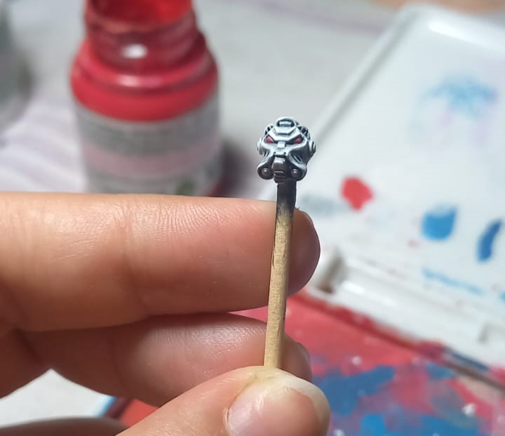
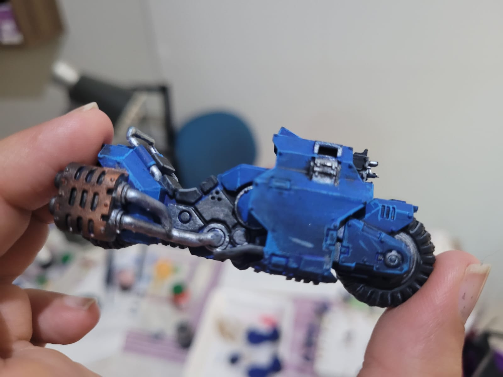
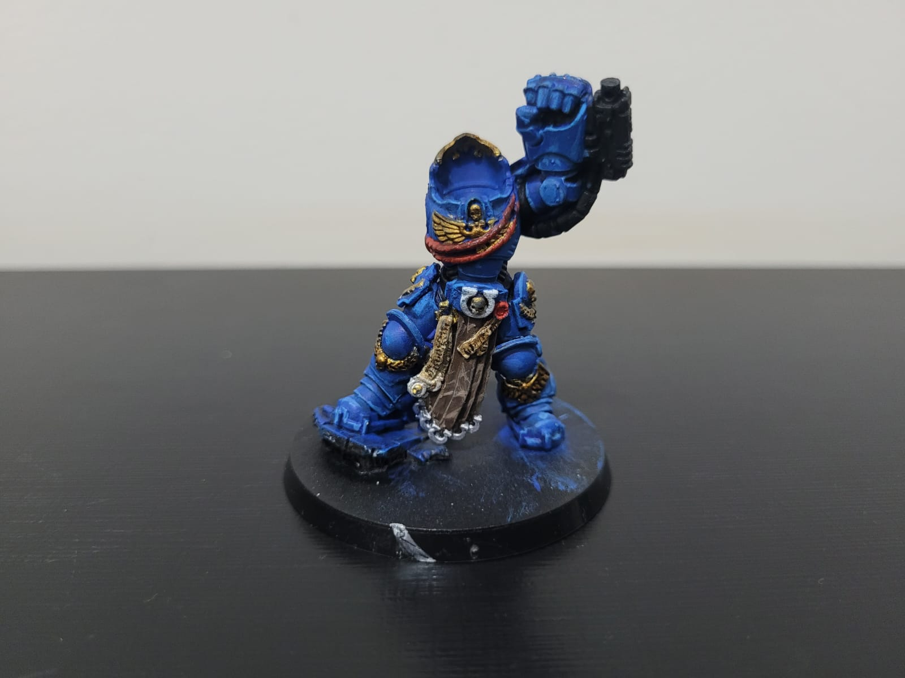

Drybrush
Drybrush, ou Pincel Seco, é uma técnica prática utilizada para destacar texturas e relevo. O pincel é carregado com pouca tinta e praticamente seco, passando levemente sobre a superfície da miniatura. Isso faz com que apenas as partes mais salientes recebam a tinta, dando um aspecto desgastado ou iluminado que valoriza detalhes como superfícies rugosas, armaduras e tecidos. É uma técnica muito eficiente, mas sua aplicação pode requerer um pouco de prática.

Washes
Wash é uma tinta bastante diluída e escura, aplicada sobre toda a miniatura para criar sombras naturais e definir os detalhes mais finos, como fendas, dobras e relevos. Ao acumular nos recessos das peças, o wash adiciona profundidade e realismo à pintura, fazendo com que as áreas escuras contrastem com as mais claras, e dando um aspecto mais tridimensional ao modelo. Existem washes prontos para serem aplicados, mas é possível diluir tintas acrílicas para realizar essa técnica.

Highlighting
É uma técnica muito utilizada e praticamente essencial na pintura de miniaturas. Consiste em aplicar uma cor mais clara nas áreas elevadas ou expostas do modelo, simulando a incidência de luz. Esse efeito ajuda a criar contraste e dar maior profundidade, fazendo com que os detalhes da miniatura fiquem mais visíveis e realistas. Normalmente, o highlight é feito após a pintura base e as sombras.
